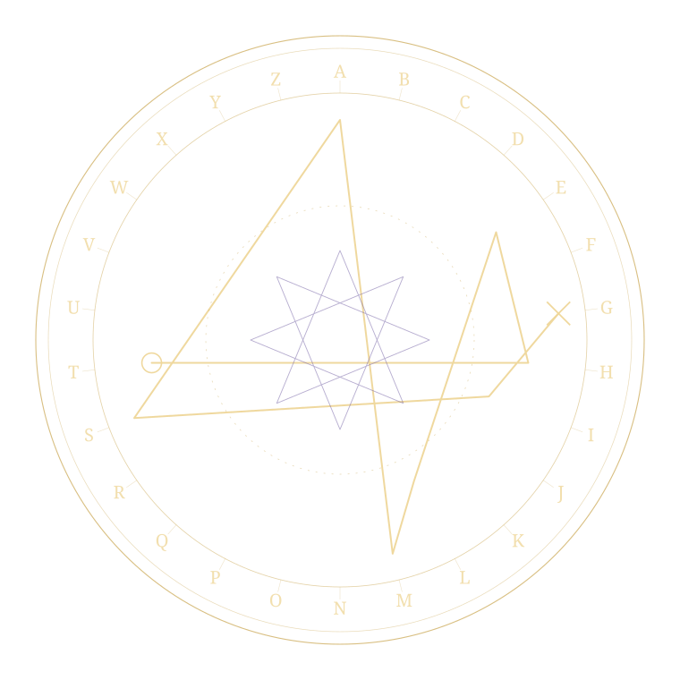

The Sigil Workshop
A sigil is a sentence compressed until it stops being readable. The method is old, the psychology is straightforward, and the craft is worth doing by hand at least once.
Austin Osman Spare, working in London in the 1910s, gave the technique its modern form. Write the intention as a single declarative sentence. Strike out the vowels and then the repeated letters. Fuse what remains into one figure until the sentence cannot be read back out of it. Then, and this is the part most people skip, forget it: hold the figure until it is charged with attention, and let the literal wording go, so that the desire stops being an anxious daily errand.
Whatever one believes about the result, the sequence is a recognisable psychological operation. A vague wish is forced into one sentence (clarification), the sentence is made unreadable (the conscious mind loses its grip on it), and the figure is then carried as an image rather than a nagging thought. Jung would call it giving the unconscious something it can work with. Spare said something rougher and shorter.
Three methods, one statement
Write it in the present tense, as something already true, and keep it to one clause. Nothing you type is stored or sent anywhere: the figure is drawn in your own browser.
What each one is doing
The rose wheel
The twenty six letters are set around a wheel in three rings, and the reduced letters are joined in order by a single line, opened with a small circle and closed with a cross bar. This is the Golden Dawn's rose cross method, adapted from the Hebrew wheel to the Latin alphabet. Its virtue is legibility: two people using the same wheel produce comparable figures.
The planetary square
Agrippa's kameas are numbered squares, and a name or a statement can be walked across one by turning each letter into a number and joining the cells. The figure is therefore bound to a planet: Venus for attachment and art, Mars for conflict, Mercury for speech and accounts. Traditional sigils of the intelligences and spirits are made this way.
The fused monogram
Spare's own approach, and the least rule bound: the letters are overlaid, rotated and scaled until the sentence is no longer readable and the shape looks like one mark instead of several. A monogram made by hand on paper will beat any generator. This one is an honest first draft.
Charging, and then forgetting
- Draw it again by hand. The generated plate is a template. Copying it out slowly, in ink, is where the attention actually goes in.
- Charge it once, properly. Any state of concentrated attention will serve: the tradition variously recommends exhaustion, gnosis, rhythm, fasting or plain sustained gazing. Intensity matters less than undivided attention.
- Then put it away. Burn it, bury it, seal it in the back of the record. Rehearsing the wording daily is the one instruction every school agrees ruins the operation.
- Do the obvious work as well. No tradition in this cabinet claims that the figure excuses you from the effort. Crowley's own maxim was that magick without practical means is a fantasy.